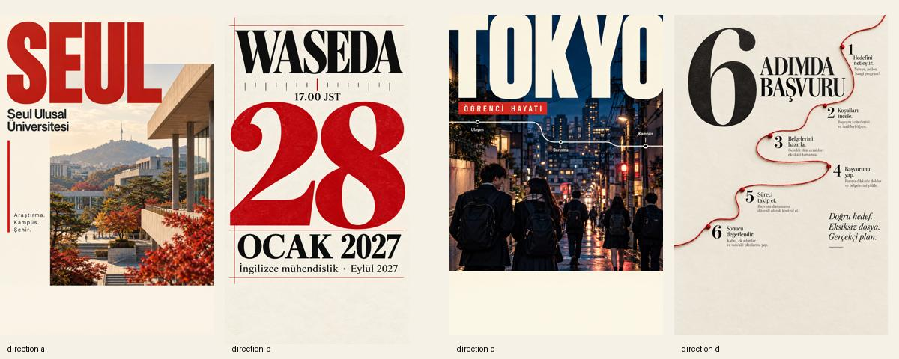
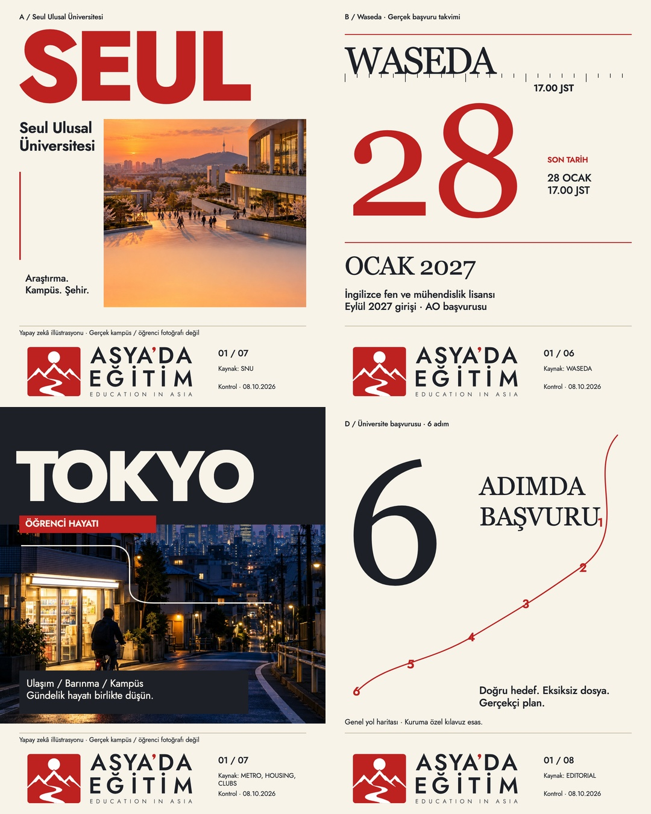

Instagram Studio · Phase 2B · Complete branded carousels
Dört gönderi. Baştan sona.
28 gerçek, markalı 1080×1350 PNG. Kapak, anlatı, sonuç ve CTA; logo her slaydın içinde. Dört gönderinin tamamı aşağıda sıralı olarak incelenebilir ve ayrı ZIP olarak indirilebilir.
HUMAN FULL-CAROUSEL APPROVAL PENDING
37 başarılı ChatGPT Image üretimi: 27 ilk keşif + 6 düzeltme + 4 tam kapak kompozisyonu. Son Türkçe metin deterministik dizildi; H-02 / D-04 SVG’leri aynen entegre edildi. Şablon kanonikleştirilmedi; Instagram’a yayın yapılmadı.
Görsel dürüstlük: Fotoğrafsı sahneler yapay zekâ illüstrasyonlarıdır; gerçek SNU/Waseda kampüsü, öğrenci fotoğrafı veya tanıklık değildir. Bu açıklama ilgili nihai PNG’lerin içindedir. Bilgiler 8 Ekim 2026’da kontrol edildi; son tarih gönderisi yayın öncesi yeniden teyit edilmeli.
İlk görsel araştırmanın çoğu yalnızca sahne ürettiği için dört ek, tipografi ve yerleşimi birlikte tasarlayan tam kapak keşfi yapıldı. Üretim, bu kapakların ölçek gerilimini ve farklı görsel gramerlerini izler: SEUL’de kırmızı dev başlık / mimari kesit; Waseda’da serif 28 / saat işaretleri; Tokyo’da gece sahnesi / ulaşım çizgisi; başvuruda büyük 6 / kırmızı süreç ipliği. İç slaytlar fotoğraf, tipografik veri, dikey dosya ve rota kompozisyonları arasında değişir.

Kaynak keşifler — logo yok, metin üretim kaynağı değildir.

Nihai üretim — kesin metin ve kanonik SVG.
Orijinal üretimler değişmeden marka çalışma klasöründe saklanır. Farklı en-boy oranları esnetilmedi; fotoğraf alanları bilinçli oransal kırpıldı. AI tipografisi finalde kullanılmadı.
İnceleme özeti
SNU: Üniversite profili ile sıralama iddiası ayrıldı; QS Dünya 2027, 38. sıra. Akademik alanlar bölüm sıralaması gibi sunulmuyor. Waseda: Geçmiş SNU tarihi kaldırıldı; gerçek Eylül 2027 FSE AO takvimi, saat dilimi ve değerlendirme aşamaları kullanıldı. Tokyo: Abonmanın güzergâh sınırı, barınma başlangıç giderleri ve UTokyo kulüp örneği açıkça ayrıştırıldı. 6 adım: Her adım ayrı slaytta, danışmanlık katkısı somut ve garanti iddiası olmadan anlatıldı.
Her slayt gerçek logolu PNG’den incelendi; kalite ve sadakat kaydı burada. Tasarımlar ve içerik insan onayı bekler. Bilgiler kuruma, programa ve döneme özeldir; sözleşme ve uygunluk ayrıntıları resmî kılavuzdan okunmalıdır.